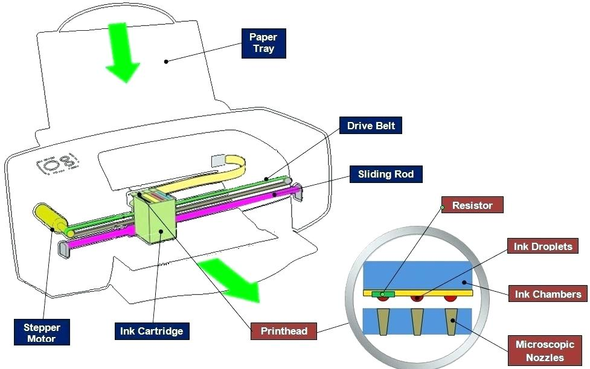

Ink-Jet Printers
Inkjet printing is a type of computer printing that recreates a digital image by propelling droplets of ink onto paper, plastic, or other substrates. Inkjet printers are the most commonly used type of printer, and range from small inexpensive consumer models to expensive professional machines.
The concept of inkjet printing originated in the 20th century, and the technology was first extensively developed in the early 1950s. Starting in the late 1970s, inkjet printers that could reproduce digital images generated by computers were developed, mainly by Epson, Hewlett-Packard (HP) and Canon. In the worldwide consumer market, four manufacturers account for the majority of inkjet printer sales: Canon, HP, Epson and Brother.
The emerging ink jet material deposition market also uses inkjet technologies, typically printheads using piezoelectric crystals, to deposit materials directly on substrates.
The technology has been extended and the 'ink' can now also comprise solder paste in PCB assembly, or living cells, for creating biosensors and for tissue engineering.

Jump to Required Page :
Homepage
Impact Printer
Dot-Matrix Printer
Non-Impact Printer
Laser-Jet Printer
Comparision Between Dot-Matrix, Laser-Jet and Ink-Jet Printers
About Us
Register for Getting Best Deals on Electronic Devices